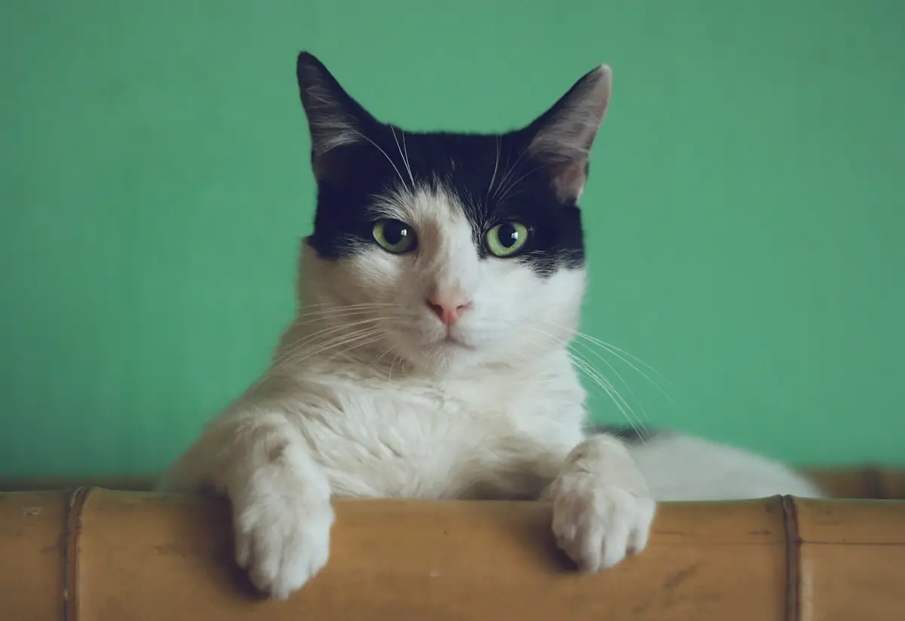
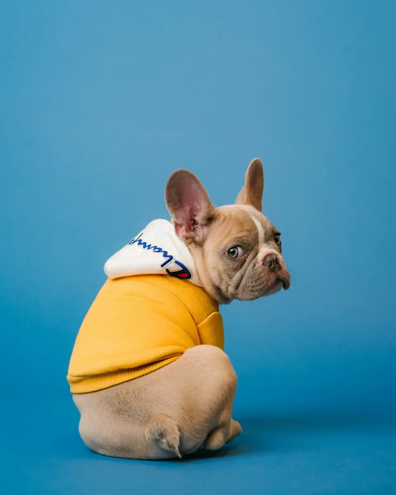

A home check-in
Feeding, fresh water and company in a familiar space.
30-minute visitPet care built around feeding, play and the small habits that make your pet feel at home.
Familiar routines, while you are away
Choose what fits, then add your details. We confirm scope and availability with you.
Feeding, fresh water and company in a familiar space.
30-minute visitExtra time for pets who enjoy a little more company.
60-minute visitDiscuss routines and whether overnight care is a fit.
By arrangementFictional demo: images are illustrative stock references. Any prices, schedules and listings shown are examples, not live offers.

Feeding instructions, routines, emergency contacts and a meet-and-greet are agreed before the first booking.
A meet-and-greet helps confirm the routine, access arrangements and whether the fit is right.
Feeding instructions, routines, emergency contacts and a meet-and-greet are agreed before the first booking.
This is a fictional design demo. The form previews the enquiry flow and does not send or store your details. Use the link to Ruhaan to discuss making this design your own.
Feeding instructions, routines, emergency contacts and a meet-and-greet are agreed before the first booking.
Try this form with sample details. It previews an enquiry only—nothing is sent, stored or booked.
Ask Ruhaan for this website ↗